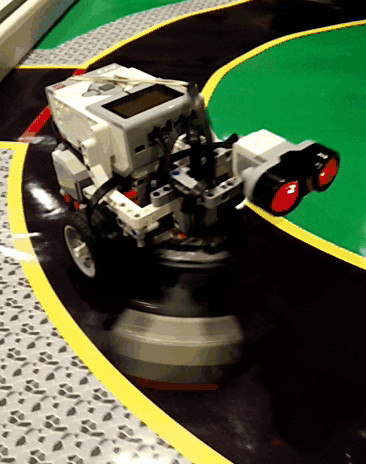
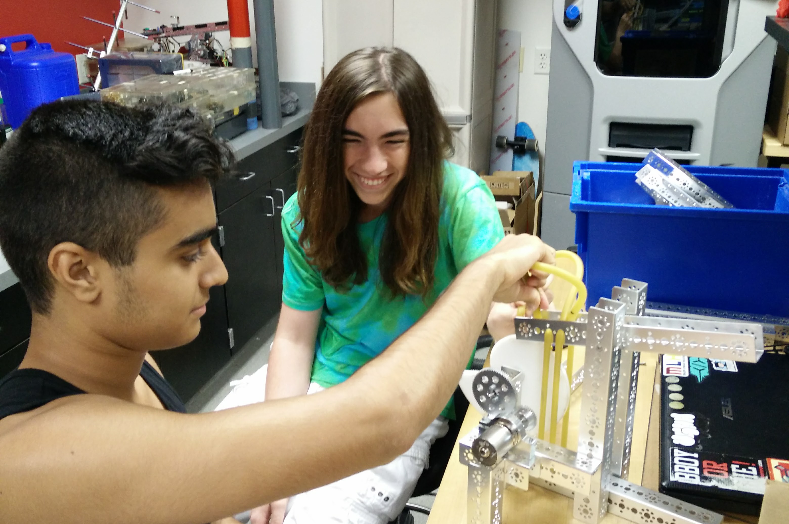
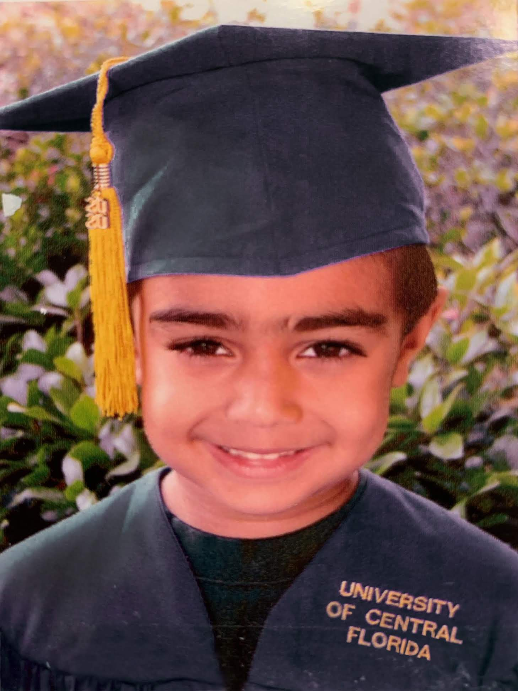
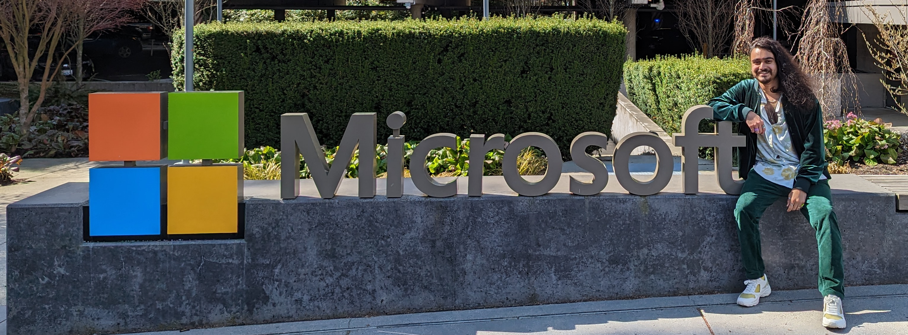
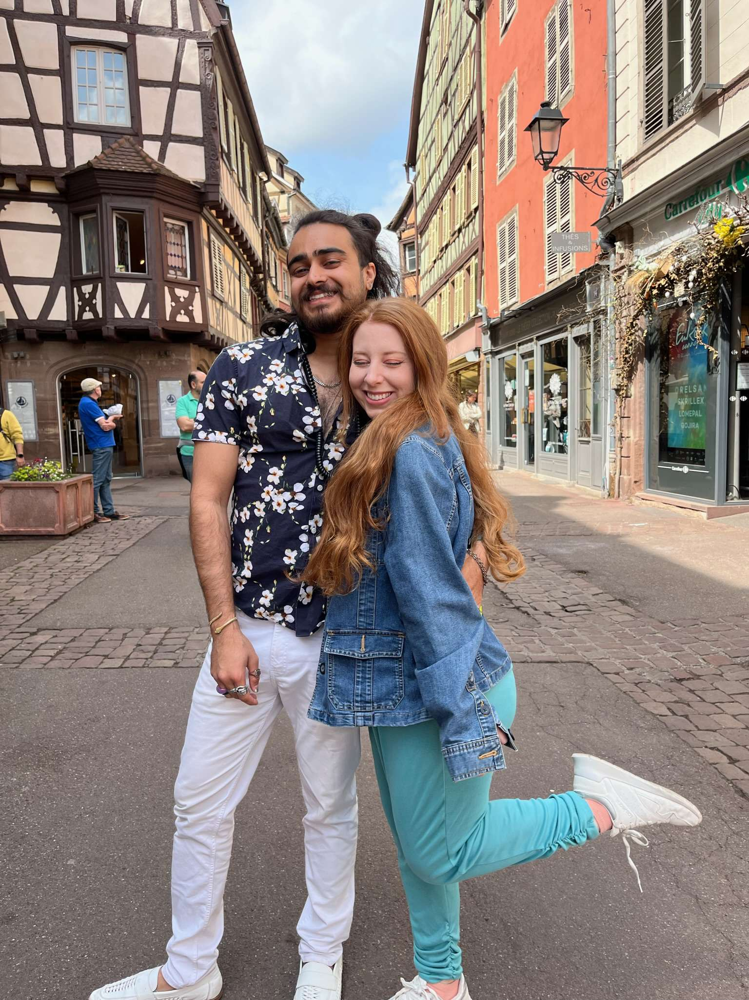

About Me
I'm a skilled, creative software engineer with a nearly lifelong passion for robotics and bettering the world. I have experience at Lockheed Martin and Microsoft, mostly working in C++.

My Story
I started my robotics journey by forming a LEGO robotics team with my friends in middle school, then went on to lead my high school's robotics team to multiple championships, and ended my academic career with an intelligent robotic systems minor (alongside a math minor and my computer science BS) in my three year Cum Laude stint at the University of Central Florida. In order to graduate so quickly, I shortsightedly worked hard in school while somewhat disregarding the career prospects which lay ahead. Somehow, the single online job application I sent out landed me at Lockheed Martin, where I worked during my studies for a bit over a year before graduating.
My initial foray into robotics was through LEGO Mindstorms, but I quickly found myself working with bigger and more custom robots.
|  |  |
My time at Lockheed was extremely rewarding and fulfilling. I had the opportunities to work on drones, simulations, sensors, GUIs, and more, allowing me to experience a wide breadth of domains in quite a short period. I found building drones and their software to be the most riveting, getting to develop cutting edge technology in Lockheed's Missiles and Fire Control Applied Research division. I got to work with every part of the system, including soldering, calibrating, coding, and testing, both in the lab and the field.
I earned my degree at the peak of COVID lockdowns and wasn't able to have a proper graduation, so I repurposed my preschool graduation picture.
When my graduation was quickly approaching, I sent out some applications, went through a few interviews, and was captivated by the allure of big tech. I packed up my life into my car and headed away from my partner of over two years to Seattle to work at Microsoft despite only being told I'd be working in operating systems. I ended up working on Windows WiFi for almost three years, developing my technical and soft skills alike, especially as I'd never really worked as part of a larger organization before.
I drove from Orlando to Seattle to work at Microsoft, but my car only made it to Idaho. As you can see, I always stay cool, calm, and collected under pressure.

As time passed, the distance from my partner proved to be a greater challenge than my work, so I ended up leaving Microsoft to move back to Florida. I took the time off to enjoy traveling with friends and family and totally decompress for the first time in years. When the dust settled, I was faced with my daunting self-imposed unemployment, but also a shining opportunity to pursue my goals and my dreams.
On my last day at Microsoft, I made sure to finally get a picture with the iconic sign.
I primarily targeted remote robotics work, since as the partner of an almost-doctor, I'd have little to no control over our place of residence in the near future. Of course, that did limit the job pool, but I found plenty of viable options, though unfortunately none ultimately found me to be the ideal employee. The months of solely rejections were certainly disheartening, but I understood my lack of direct professional experience in robotics definitely made me a less attractive candidate.
The free time to travel did somewhat ease the stress of the job hunt. I had the opportunities to rock climb outdoors in Arkansas and visit Europe with my partner, both for the first time!
 |
 |
I finally received a job offer out of the blue, without so much as a proper interview, to work at Microsoft once again, but remotely with a third party contractor. With the chance to work fully remotely, as well as feeling my emergency fund dwindling, I jumped at the opportunity. I find myself back in a fairly comfortable position, but I'm still holding out hope to find and land my dream job.